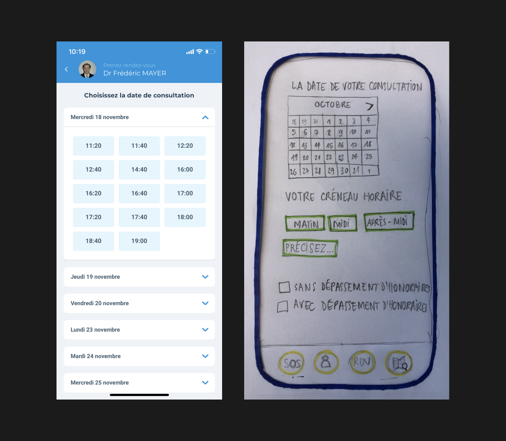

Portfolio
Design Sprint & UI design
Doctolib Redesign
Projet
Design Sprint en 2 jours
Rôle
Design Sprint (En équipe avec Léna, Nadèje, Stéphanie, Yola)
UI design, mockup (En solo)
Date & Lieu
Octobre 2020, Université Paris 1
Idée à développer
Doctolib s’est imposé comme un acteur de la santé et le Covid-19 fait apparaître de nouvelles opportunités pour améliorer la gestion de l’afflux de demandes vers les médecins et les laboratoires, pour éviter les logues files d’attente. Quel dispositif pourrait améliorer le système actuel ?
Processus du Design Sprint
üó∫ Map
✏️ Sketch
üîÄ User test flow
✌️ Prototype papier & Test
üó∫ Map
Définir la direction, trouver le chemin
- Définition des objectifs à long terme & des points à résoudre
- La méthode HMW (How Might We?)
- Grouper et catégoriser
- Cartographie du parcours
- Définir le périmètre du Sprint

"Dans 2 ans, Doctolib proposera des mini-RDV pour les renouvellements d'ordonnances."
"Dans 2 ans, Doctolib aura des filtres plus affinés pour trier les crénaux disponibles en fonction de notre emploi du temps."
"Dans 2 ans, Doctolib offrira une encyclopédie des maladies et des médicaments."
1
Objectifs à long terme & des points à résoudre
2
La méthode HMW (How Might We ?)
Passer d'un problème à une opportunité
"Pouvons-nous proposer des alertes/infos en temps réel ?"
‚Ü™ "Comment pourrions-nous regrouper les infos/actu sanitaires et les consignes ?"
"Pouvons-nous réhumaniser la relation patient/médecin ?"
↪ "Comment pourrions-nous recréer la relation médecin de famille ?"
Nous avons groupé nos idées en 5 catégories :
- Centraliser l'information
- Améliorer la relation patient/médecin
- Organiser les flux des patients
- Collaborer avec réseaux externes & internes
- Baisser les tarifs
3
Grouper et catégoriser
4
Cartographie du parcours
Partir de l'objectif final et identifier les étapes qui y mènent
- Regrouper les infos/actu sanitaires et les consignes
- Donner plus d'autonomie aux patients
- Recréer la relation médecin de famille
5
Définir le périmère du Sprint
✏️ Sketch
Imaginer, échanger, développer une histoire ensemble
- Notes
- Ideas
- Crazy Eights
- Solution Sketch

üîÄ User test flow
Élaborer le scénario d'utilisation
Chaque membre de l'équipe a dessiné un scénario sur une ou deux fonctions de l'application, ensuite nous avons fusionné des parties qui sont votées "intéressantes" afin de créer un scéanrio complet.
✌️ Prototype papier & Test
Donner de la vie aux idées –
Analyser des comportements des utilisateurs, trouver des points à améliorer
3 utilisateurs ont participé au test. Chaque test a été guidé par une intervieweuse, une notatrice et une "ordinateur" qui manipule le prototype papier.

UI design
Page d'accueil existant & Sketch
Page d'accueil Redesign
- L'actualité sanitaire avec une infographie
- Questionnaires disponibles avant prise de rendez-vous
- Agrandissement de titre, réduction de la quantité de texte, plus d'espace entre les sections pour faciliter la lecture. Une illustration est ajoutée également pour rendre la lecture plus agréable.
- La couleur de bouton applatie pour donner un air plus contemporain. Ombre ajouté aux sections à mettre en avant.
- La barre des menus pour des accès plus rapides
Questionnaires Sketch
Questionnaires UI
- Questionnaires simples et faciles pour bien guider les utilisatuers
- Selon les testes prototype papier, les utilisateurs ont approuvé que le fait de pouvoir répondre aux questionnaires avant la prise de rendez-vous peut être rassurant. Pour renforcer le soutien psychologique, l'application pourra donner la statistique sur les symptômes les plus recherchés en ce moment.
Choix de solution & Chat UI
- Choix de solution: Pour réduire l'affluence des rendez-vous au cabinet, Doctolib propose des alternatifs. Grâce à la pré-consultation, les patients peuvent comprendre rapidement la situation et guidés vers des solutions adaptées. Automédication encadrée par des professionnels de santé est aussi proposée.
- Pendant le chat de pré-consultation, les praticiens peuvent poser des questions nécessaires à la consultation à l'avance. Pour une discussion plus simple et rapide, les questions fréquentes sont proposées pour les praticiens.
Choix de la date existant & Sketch
Choix de la date Redesign
- Possibilité de filtrer les résultats de recherche de praticiens suivant la disponibilité de l'utilisateur
- Utilisation de calendrier mensuel pour faciliter le choix
Profile de praticien existant & Sketch
Profile de praticien Redesign
- Le bouton pour la prise de RDV visio mis en avant
- La fonction pour matcher les disponibilités de l'utilisateur avec les horaires de praticien. (en parallèle avec le filtre de recherche par les disponibilités de l'utilisateur)
Cela permettra de réduire la quantité de l'information affichée, donc réduire l'effort des utilisateurs nécessaire pour le choix d'horaires.
Encyclopédie Sketch
Encyclopédie UI
- Une fonction imaginée pendant le Design Sprint.
L'encyclopédie des symptômes, maladies, médicaments pourra offrir l'information de qualité aux utilisateurs tout en les rassurant. - Les boutons flottants en bas à droite pour la discussion visio ou chat sont proposés pour donner la possibilité de dialoguer avec des professionnels de santé plus facilement.

 Visiter le site
Visiter le site